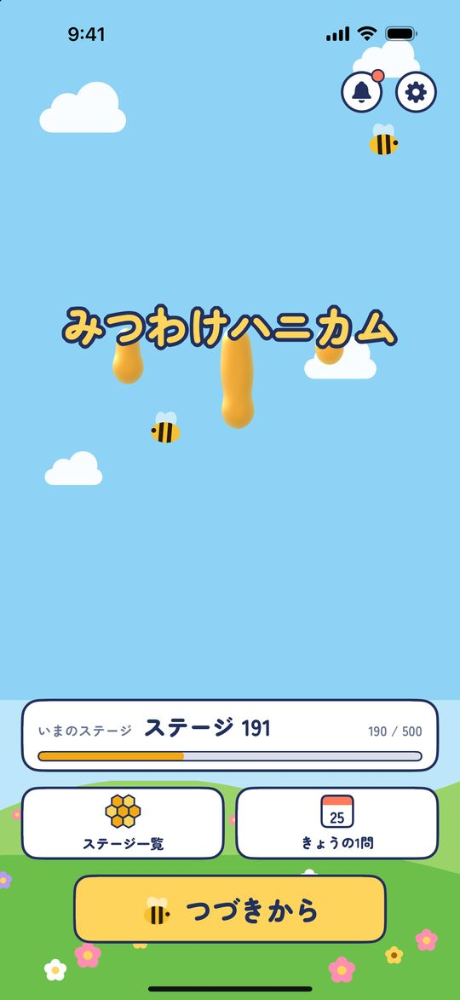
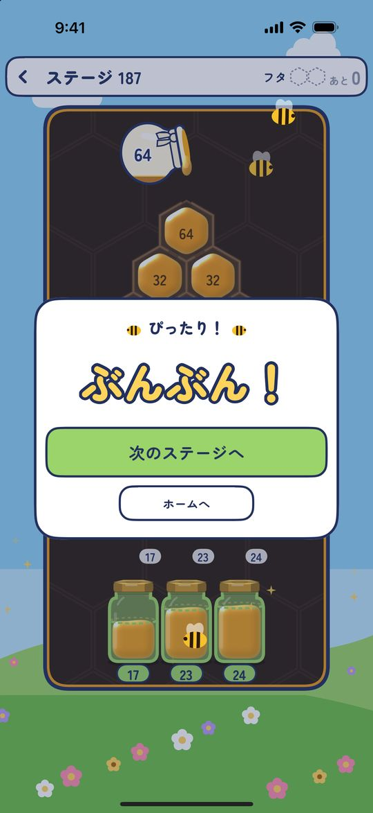

フタで道を変える
マスをタップしてフタを置く。もう一度タップで外せる。フタは決まった枚数まで。
蜜は六角のマスに着くたび、左下と右下へ半分ずつ分かれて流れます。マスにフタを置いて道を変え、ツボの数とぴったり同じ量を届けられるかな？
App Store で無料iPhone・無料（広告あり。アプリ内課金はありません）


マスをタップしてフタを置く。もう一度タップで外せる。フタは決まった枚数まで。
蜜が巣を流れ落ちて、ツボにたまる。どのツボもぴったりなら、ハチたちが「ぶんぶん！」とお祝い。
ひびの入った壁をタップすると、ハチがかじってこわす。ふたつの注ぎ口から流れるステージも。
毎日その日だけの問題がとどく。困ったら、短い動画を見ると次の1手を光らせるヒント。
← 横にすべらせて見られます →



どれも無料。遊び比べてみてください。